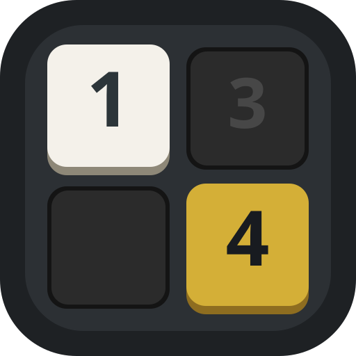

Le casse-tête logique qui fusionne l'unicité du Sudoku, les sommes du Kakuro et les murs cachés du Nonogram.
Téléchargez et installez directement le fichier APK officiel sur votre smartphone ou tablette Android, sans passer par le store.
Chaque jour, une nouvelle grille 5x5 identique pour tous les joueurs. Testez votre logique directement dans votre navigateur !
Lancez le jeu complet et installez-le sur l'écran d'accueil de votre iPhone pour y jouer plein écran et 100 % hors-ligne.
KuroGram.apk.
Le Mode 6 : 🤩 PGM ouvre l'accès aux grilles géantes de 10x10 jusqu'à 16x16 utilisant la notation hexadécimale (chiffres 1 à 9 et lettres A à G).
Vous pouvez le débloquer gratuitement en relevant le défi ultime en jeu (terminer 5 grilles 9x9 sans erreur et sans bonus), ou obtenir immédiatement votre code secret donateur en soutenant le projet !